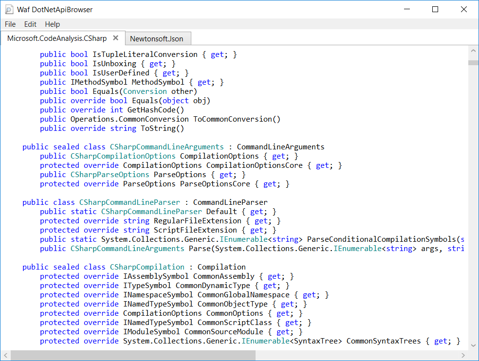

Features
- Summarize the public API of a .NET Assembly.
- Open assembly from Disk or load the assembly from a NuGet package.
- Compare two opened assemblies with an external Diff Tool.
- Can be used to compare different versions of an assembly or NuGet package.
- By default an installed Visual Studio will be used as Diff Tool.
- Provides syntax highlighting.
- Integrated Find feature within the editor.
Used Components
